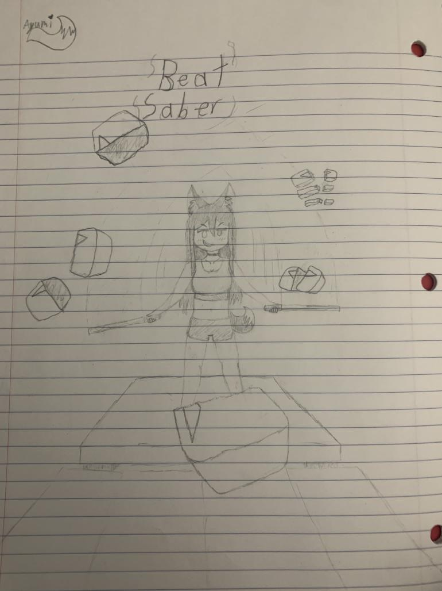

This is a compilation of a few of my favorite pieces of art
that I've done throughout my art career thus far.
This is a picture of my first drawing, made at the start of the second semester of my sophmore year. (2021-22)
This is a remake I did at the same time during my junior year. (2022-23)
This was an idea that I had in my head for a while at the time, and was great for developing my skills at the time with two full body characters in frame. I drew this around halfway through semester 2. (2021-22)
This one was drawn near the end of my 2021-22 year. I drew this because around this time I had just started modding Beat Saber.

This was my last drawing of my 2021-22 year, based around the song "Making Day" by Atsuover.
Inspired by the previous year, I decided to draw some characters from the story me and my friends are writing. It was drawn around the beginning of my junior year. (2022-23)